视频 2014 2015
| Year | 1 | 2 | 3 | 4 | 5 | 6 | 7 | 8 | 9 | 10 | 特别 | |
| 1 | 2002 | 郑培民 | 张荣锁 | 王 选 | 刘姝威 | 张瑞敏 | 张前东 | 黄 昆 | 姚 明 | 赵新民 | 濮存昕 | 三峡工程移民 |
| 2 | 2003 | 杨利伟 | 钟南山 | 陈忠和 | 尾山宏 | 梁雨润 | 巴 金 | 高耀洁 | 达吾提·阿西木 | 成 龙 | 衡阳武警消防官兵 | |
| 3 | 2004 | 任长霞 | 牛玉儒 | 田世国 | 刘 翔 | 袁隆平 | 孙必干 | 徐本禹 | 梁万俊 | 明正彬 | 桂希恩 | 中国女排 |
| 4 | 2005 | 魏青刚 | 丛 飞 | 黄伯云 | 李春燕 | 洪战辉 | 陈 健 | 邰丽华 | 杨业功 | 王顺友 | 费俊龙、聂海胜 | 青藏铁路的建设者 |
| 5 | 2006 | 丁晓兵 | 王百姓 | 华益慰 | 霍英东 | 季羡林 | 叶笃正 | 孔祥瑞 | 林秀贞 | 黄 舸 | 青岛爱心群体 | |
| 6 | 2007 | 钱学森 | 闵恩泽 | 方永刚 | 谢延信 | 钟期荣 胡鸿烈 | 罗映珍 | 李剑英 | 李 丽 | 陈晓兰 | 孟祥斌 | 嫦娥一号 |
| 7 | 2008 | 13兄弟 | 李隆 | 经大忠 | 武文斌 | 金 晶 | 吉 吉 | 张艺谋奥运团队 | 神七航天员 | 韩惠民 | 李桂林、陆建芬 | 全体“中国人” |
| 8 | 2009 | 卓琳 | 宋文骢 | 阿里帕·阿力马洪 | 萨布利亚·坦贝肯 | 张正祥 | 陈玉蓉 | 朱邦月 | 沈浩 | 李灵 | 翟墨 | 长江大学大学生群体 |
| 9 | 2010 | 钱伟长 | 孙水林、 孙东林 |
才哇 | 郭明义 | 王伟 | 王万青 | 王茂华、 谭良才 |
何祥美 | 刘丽 | 孙炎明 | 海地中国维和人员 K165次乘务组英雄列车 中国志愿者 |
| 10 | 2011 | 朱光亚 | 胡忠、谢晓君 | 吴孟超 | 刘伟 | 杨善洲 | 阿里木 | 张平宜 | 孟佩杰 | 吴菊萍 | 刘金国 | 白方礼 |
| 11 | 2012 | 林俊德 | 陈斌强 | 何玥 | 陈家顺 | 高淑珍 | 张丽莉 | 李文波 | 高秉涵 | 周月华 艾起夫妇 |
罗阳 | 湄公河“10·5惨案”专案组 |
| 12 | 2013 | 黄旭华 | 刘盛兰 | 陈俊贵 | 段爱平 | 沈克泉& 沈昌健 |
格桑德吉 | 胡佩兰 | 姚厚芝 | 方俊明 | 龚全珍 | 载人航天英雄 |
|
||||||||||||
| 年度 | 中央电视台新闻中心《感动中国》栏目·年度人物 |
| 2002年 | （主词条：感动中国2002年度人物）
郑培民：勤政爱民的湖南省委原副书记
张荣锁：被誉为“新时代愚公”的河南辉县上八里镇回龙村党支书
王选：侵华日军细菌战中国受害者诉讼原告团团长
刘姝威：“打破蓝田神话”的中央财经大学研究员
张瑞敏：海尔集团首席执行官
张前东：舍己救人的重庆鱼田堡煤矿103队队长
黄昆：国家最高科技奖获得者
姚明：篮球运动员
赵新民：勇斗歹徒光荣牺牲的乌鲁木齐市小西门派出所教导员
濮存昕：预防艾滋病宣传员
三峡移民：特别奖（特别致敬），特别大奖授予舍小家为大家的三峡移民，奖杯由中国三峡博物馆永久收藏 |
| 2003年 | （主词条：感动中国2003年度人物）
杨利伟：实现中华民族千年“飞天梦想”的航天英雄
钟南山：“非典”时期做出卓越贡献、给予人们战胜疫情的勇气和力量的中国工程院院士
陈忠和：带领中国女排重夺阔别17年冠军奖杯的主教练陈忠和
尾山宏：跨越国家和民族界限，勇敢担负起历史责任的日本著名律师，“中国人战争受害者索赔要求日本律师团”团长
梁雨润：视群众利益为根本利益的“百姓书记”、 山西运城市纪检委副书记
巴金：穿越一个世纪点亮许多青年灵魂的著名作家
高耀洁：70多岁高龄的“民间防艾第一人”、河南中医学院退休教授
达吾提·阿西木：地震灾难中全家5人遇难还带领群众抗震救灾的新疆琼库恰克乡6大队村党支部书记
成龙：始终致力于传播中国文化、热衷于公益事业，在国家和社会的危难时期重塑信心、传递情感的香港著名影星
衡阳消防兵：特别奖（特别致敬），2003年“11·3”衡阳特大火灾坍塌事故中，为抢救人民生命财产献身 |
| 2004年 | （主词条：感动中国2004年度人物）
任长霞：连破积年大案，以一身正气镇住邪恶的河南“女神警”
牛玉儒：勤勤恳恳，鞠躬尽瘁，被称为新时代共产党榜样
田世国：捐肾救母，孝道感天下的孝子
刘翔：雅典奥运会上，用风一样的速度向世界展示中国，并重新书写中国田径史的运动员
袁隆平：一生以水稻为伴，被称为世界“杂交水稻之父”的科学家
孙必干：临危受命，在战火纷飞的伊拉克成功解救中国人质的外交官
徐本禹：甘受清贫，在贵州深山小学任教的青年志愿者
梁万俊：在危急关头沉着冷静，创造飞行奇迹的空军试飞员
明正彬：出生入死卧底侦察，给毒品犯罪以沉重打击的缉毒英雄
桂希恩：用良知揭开真相，为艾滋病患者奉献一腔热情的医生
中国女排：特别奖（特别致敬），以表彰她们在雅典奥运会上绝地反击，反败为胜，再次响彻云霄的女排拼搏精神 |
| 2005年 | （主词条：感动中国2005年度人物）
魏青刚：在麦莎台风中，为救落水者三次跳入巨浪的河南打工青年
丛飞：身患重病，仍然坚持助学的歌手
黄伯云：改革开放后第一批学成回国，夺得连续空缺六年科技大奖的学者
李春燕：坚守在贵州深山，为村民健康付出青春的赤脚医生
洪战辉：连续12年自强自立，带着妹妹上学的河南大学生
陈健：为一句承诺，在北大荒为烈士守墓37年的上海知青
邰丽华：听不到声音，但是却用美丽舞蹈打动观众的残疾艺术家
杨业功：保家卫国，为打造雄狮锐旅而鞠躬尽瘁的司令员
王顺友：20年行走在马班邮路上，成为世界邮递员的楷模
青藏铁路建设者：特别奖（特别致敬），不辞辛苦、连年奋战，在生命禁区建设世界上最伟大铁路的奋斗精神 |
| 2006年 | （主词条：感动中国2006年度人物）
丁晓兵：独臂英雄
王百姓：排爆专家，河南省公安
华益慰：好军医
霍英东：慈善家
季羡林：著名学者
叶笃正：气象学家
孔祥瑞：蓝领专家
林秀贞：爱心大姐
黄舸：阳光少年
微尘：慈善家
中国工农红军：特别奖（特别致敬） |
| 2007年 | （主词条：感动中国2007年度人物）
钱学森：中国航天事业奠基人
闵恩泽：国家科学技术大奖获得者
方永刚：党的理论传播者
谢延信：细心侍奉亡妻家人33年的河南工人
罗映珍：用爱心唤醒英雄的妻子
李剑英：为保护群众生命财产牺牲的空军飞行员，河南人
李丽：被称为湖南张海迪的残疾人
陈晓兰：坚守医德的医生
孟祥斌：为救落水者牺牲的年轻军人
嫦娥一号研发团队：特别奖（特别致敬） |
| 2008年 | （主词条：感动中国2008年度人物）
唐山十三农民：奔忙在冰雪地震灾害前线的志愿者
李隆：冒着生命危险在救灾前线抢险的消防队员
经大忠：带领群众抗震救灾的北川县长
武文斌：累死在救灾前线的河南青年战士
金晶：维护奥运圣火尊严的残疾人火炬手
吉吉：把圣火送上地球最高点的藏族火炬手
张艺谋奥运团队：向世界展示中国文化
神七航天员：成功实现中国首次太空行走
韩惠民：照顾瘫痪女友34年的苏州市民
全体“中国人”：特别奖（特别致敬） |
| 2009年 | （主词条：感动中国2009年度人物）
卓琳：邓小平同志的夫人
阿里帕·阿力马洪：多民族孤儿的妈妈
萨布利亚·坦贝肯（德国）：给高原的盲童带来光明的使者
张正祥：26年义务守护滇池环境的农民
陈玉蓉：割肝救子的暴走妈妈
朱邦月：照顾残疾家人20多年的退休工人
沈浩：小岗村群众的贴心人
李灵：为留守儿童办学的河南女大学生
翟墨：中国环球航海第一人
长江大学见义勇为舍己救人大学生英雄集体：特别奖（特别致敬） |
| 2010年 | （主词条：感动中国2010年度人物）
钱伟长：视国家利益重于一切的科学泰斗
才哇：玉树不会忘记的康巴铁汉
郭明义：家中几乎一贫如洗却资助180多名特困生的好人
王伟：冲入泥石流救23条生命的军人
王万青：扎根草原42年的上海医生
何祥美：三栖尖兵
刘丽：资助了37名贫困学生的“洗脚妹”
孙炎明：患绝症后仍拼命工作的警察
海地中国维和人员：特别奖（特别致敬）
K165次列车乘务组英雄列车：特别奖（特别致敬）
中国志愿者：特别奖（特别致敬） |
| 2011年 | （主词条：感动中国2011年度人物）
朱光亚：为新中国核事业作出巨大贡献的科学家
吴孟超：奠基中国肝胆医学年届九十依然工作在手术台上的医生
刘伟：自小失去双臂却创造出生命奇迹的钢琴师
杨善洲：为人民群众奉献一生的党的基层干部
阿里木：靠卖羊肉串资助贫困学生的草根慈善家
张平宜：坚持12年爱心长征、改变山区麻风病村的台湾爱心人士
孟佩杰：从八岁开始伺候瘫痪养母12年的孝顺女儿
吴菊萍：在危急时刻奋力救下坠楼婴儿的最美妈妈
刘金国：为官清廉的公安战线楷模
白方礼：特别奖（特别致敬） |
| 2012年 | （主词条：感动中国2012年度人物）
林俊德：一生奉献给核事业，工作到生命最后一刻的科学家
陈斌强：坚持5年背着生病母亲上下班的孝子
何玥：因病去世并捐献器官的12岁女孩
陈家顺：为保障农民工利益，多次到企业卧底打工的“民工”局长
高淑珍：坚守14年，以家庭的力量撑起爱心小院的农家妇女
张丽莉：为救出学生失去双腿的“最美女教师”
李文波：在南海默默守礁20年，为气象观测作出巨大贡献的海军气象工程师
高秉涵：为上百位老兵带回骨灰的台湾老兵
罗阳：用生命托起战机，最终倒在工作岗位上的航空英模
湄公河“10·5”案专案组：特别奖（特别致敬） |
| 2013年 | （主词条：感动中国2013年度人物）
黄旭华：默默奉献30年的中国核潜艇之父
刘盛兰：年届90仍然坚持拾荒助学的山东老人
陈俊贵：为报答战友深情，几十年守护天山筑路士兵墓园的老兵
段爱平：努力改变乡村面貌的基层好村官
格桑德吉：最美教师，西藏墨脱山区教师
胡佩兰：退休后20年坚持每天出诊的河南仁医
方俊明：荣誉迟到28年而一生不悔的湖北见义勇为好市民
龚全珍：守护开国将军梦想，为群众服务的道德楷模
载人航天英雄：特别奖（特别致敬） |
| 2014年 | （主词条：感动中国2014年度人物）
于敏：带领科研团队实现氢弹研究突破的科学家、“两弹一星”功勋
赵久富：背井离乡、为南水北调做出巨大奉献的基层干部
张纪清：默默捐款20余年从不留真名，成为一座城市精神坐标的普通市民
陶艳波：为了能让失聪的儿子接受正常教育，和儿子同桌16年的爱心妈妈
木拉提·西日甫江：打击暴恐分子嚣张气焰、被誉为大漠“猎鹰”的新疆民警
肖卿福：对麻风病人不离不弃，守望麻风村数十年的医生
朱晓晖：十几年如一日，无微不至照顾瘫痪父亲的孝女
师昌绪：国家最高科学技术奖获得者、2014年逝世的科学家
陇海大院：接力帮助残疾邻居、创建美丽家园的居民大院
埃博拉病毒中国援非医疗队：特别奖（特别致敬） |
| 2015年 | （主词条：感动中国2015年度人物）
吴锦泉：热心公益的磨刀老人
郎平：率领中国女排重回世界之巅
屠呦呦：中国首位获诺贝尔生理学或医学奖的本土科学家
阎肃：琴弦上的放歌者
徐立平：雕刻火药的大国工匠
莫振高：鞠躬尽瘁的化缘校长最好的校长爸爸
官东：“东方之星”客轮救援“男神”
买买提江·吾买尔：促进民族团结的基层村干部
王宽：为养育孤儿卖唱的老艺术家
抗战老兵、爱国侨胞：特别奖（特别致敬） |
| 2002 | ||||
| 2002 | 1 |  |
1、勤政爱民的湖南省委原副书记 |
他身居高位而心系百姓，他以“做官先做人，万事民为先”为自己的行为标准，直到生命的最后时刻仍然不忘自己曾经许下的诺言。他树立了一个共产党人的品德风范，他在人民心里树立起一座公正廉洁为民服务的丰碑。 |
| 2002 | 2 |  |
2、被誉为“新时代愚公”的河南辉县上八里镇回龙村党支书 |
他已经拥有了财富，但他心里装着还在贫苦生活中的乡亲，他已经走出了大山，但他还想让所有乡亲都能够走出与世隔绝的山崖，他成就了一个多少代人未能实现的梦想，他拿出愚公移山的执著和勇气劈开了大山，在悬崖峭壁上为乡亲们开凿出通往外面世界的大道，更在人们的心中打开了一扇希望之门。 |
| 2002 | 3 |  |
3、侵华日军细菌战中国受害者诉讼原告团团长 |
她用柔弱的肩头担负起历史的使命，她用正义的利剑戳穿弥天的谎言，她用坚毅和执著还原历史的真相。她奔走在一条看不见尽头的诉讼之路上，和她相伴的是一群满身历史创伤的老人。她不仅仅是在为日本细菌战中的中国受害者讨还公道，更是为整个人类赖以生存的大规则寻求支撑的力量，为人类如何继承和延续历史提供了注解。 |
| 2002 | 4 | 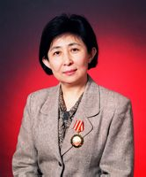 | 4、“打破蓝田神话”的中央财经大学研究员 |
面对一个强大的集团，面对一张深不可测的网，面对死亡的威胁，她以自己个人的力量坚持着这场强弱悬殊的战争，坚守着正义和良心的壁垒。正是这种中国知识分子的风骨，完美地证明了中国还有一双揉不进沙子的眼睛，推动了中国股市早日走上正轨，推动了中国经济的发展。 |
| 2002 | 5 | 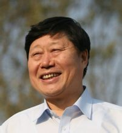 | 5、海尔集团首席执行官 |
无论在种种赞誉和表彰中，或是在种种质疑和非议中，他都一如既往。以自己的创新与开拓树立了来自东方的产品品牌；以自己的智慧和魄力打造出与时俱进的企业文化；以自己的胆识和勇气缔造着融入世界的品牌传奇。 |
| 2002 | 6 |  |
6、舍己救人的重庆鱼田堡煤矿103队队长 |
他在灾难发生的时候做出了一个伟大的选择，虽然他自己已经远离了死亡的阴影，但他却又一次奔向了死神，为的是把生命的阳光同样带给在死神面前挣扎的同伴。他无畏、清醒、果敢，他的人格光辉照亮了黑暗的矿道，照亮了几百个矿工的生命，更照亮了人们的心灵。 |
| 2002 | 7 | 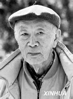 | 7、国家最高科技奖获得者 |
他一生都在科学的世界里探求真谛，一生都在默默地传递着知识的薪火，面对名利的起落，他处之淡然。他不仅以自己严谨和勤奋的科学态度在科学的领域里为人类的进步做出卓越的贡献，更以淡泊名利和率真的人生态度诠释了一个科学家的人格本质。 |
| 2002 | 8 |  |
8、篮球运动员 |
他用高超的体育技能，在一个强手如林的国家运动项目中占有了一席之地，成就了很多人的梦想，更成为中国人的骄傲。他出色的表现和随时听从祖国召唤的爱国精神，使他带给人们的思考已经远远超过了体育本身。对祖国的情感，把握和对未来的期待，都将使他成为中国体育和NBA的历史人物。 |
| 2002 | 9 | 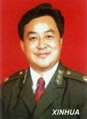 | 9、勇斗歹徒光荣牺牲的乌鲁木齐市小西门派出所教导员 |
他出于人民警察的天职，无畏地走向危险。这一刻他无需选择，因为走向危险已经是他的职业习惯，因为在选择做警察的时候，他已经准备好了这一刻。在爆炸带走一个朝气蓬勃的生命的同时，人们的心灵也被强烈地震撼。 |
| 2002 | 10 |  |
10、预防艾滋病宣传员 |
他用人们熟悉的微笑温暖着艾滋病患者的心，他紧握艾滋病患者双手的手传递着社会对他们的关爱，更传播着艾滋病知识，激发着人类战胜这个世界杀手的勇气。他把人们对他的喜爱和信任再度回报给社会，投入到社会公益事业中，以公众人物的号召力，承担起社会责任。 |
| 2002 | ◎《感动中国》2002年度人物特别大奖授予舍小家为大家的 三峡工程移民 |
奖杯由中国三峡博物馆永久收藏 | ||
| 2003 杨利伟 钟南山 陈忠和 尾山宏 梁雨润 巴金 高耀洁 达吾提·阿西木 成龙 衡阳武警消防官兵 | ||||
| 2003 | 11 | 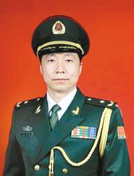 | 1、实现中华民族千年“飞天梦想”的航天英雄 |
那一刻当我们仰望星空，或许会感觉到他注视地球的目光。他承载着中华民族飞天的梦想，他象征着中国走向太空的成功。作为中华飞天第一人，作为中国航天人的杰出代表，他的名字注定要被历史铭记。成就这光彩人生的，是他训练中坚韧执着，飞天时的从容镇定，成功后的理智平和。而这也是几代中国航天人的精神，这精神开启了中国人的太空时代，还将成就我们民族更多更美好的梦想。 |
| 2003 | 12 |  |
2、“非典”时期做出卓越贡献、给予人们战胜疫情的勇气和力量的中国工程院院士 |
面对突如其来的SARS疫情，他冷静、无畏，他以医者的妙手仁心挽救生命，以科学家实事求是的科学态度应对灾难。他说“在我们这个岗位上，做好防治疾病的工作，就是最大的政治。”这掷地有声的话语，表现出他的人生准则和职业操守。他以令人敬仰的学术勇气、高尚的医德和深入的科学探索给予了人们战胜疫情的力量。 |
| 2003 | 13 | 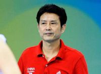 | 3、带领中国女排重夺阔别17年冠军奖杯的主教练 |
他带领女排赢得了久违的胜利，而他的贡献不仅仅在于一座阔别了17年的奖杯，更重要的是，他把自己对人生不幸坎坷的生活态度融入到体育事业中，他不仅在教女排姑娘们怎样打球，更在引导女排如何面对人生荣辱，他使女排真正感受到什么是体育的魅力，他使女排和他一样，无论面对成功还是失败总能面带微笑。这种微笑出自内心，也因此更加动人。 |
| 2003 | 14 | 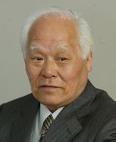 | 4、跨越国家和民族界限，勇敢担负起历史责任的日本著名律师，“中国人战争受害者索赔要求日本律师团”团长 |
一位70岁的日本老人，承受着巨大的压力，用自己大半生的时间对日本政府侵华战争的罪行进行着不懈的追问。在他身上，人们看到了跨越国家和民族的正义力量，这力量启示着人们，在捍卫正义的道路上，人们可以超越一切界限，而唯一不能失去的就是正义响在心中的声音。 |
| 2003 | 15 | 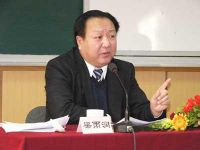 | 5、视群众利益为根本利益的“百姓书记”、 山西运城市纪检委副书记 |
他视百姓为衣食父母，他以人民利益为根本利益。他有着高度的责任感和使命感，他始终不渝地追求着为老百姓办事的政治理想，而这种追求需要莫大的正气和勇气。这样的为官生涯，架起了执政党和百姓之间的桥梁，完整地体现出一个执政党的执政原则：立党为公，执政为民，而这正是百姓和国家的希望所在。 |
| 2003 | 16 | 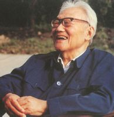 | 6、穿越一个世纪点亮许多青年灵魂的著名作家 |
穿越一个世纪，见证沧桑百年，刻画历史巨变，一个生命竟如此厚重。他在字里行间燃烧的激情，点亮多少人灵魂的灯塔；他在人生中真诚地行走，叩响多少人心灵的大门。他贯穿于文字和生命中的热情、忧患、良知，将在文学史册中永远闪耀着璀璨的光辉。 |
| 2003 | 17 |  |
7、70多岁高龄的“民间防艾第一人”、河南中医学院退休教授 |
这是一位步履蹒跚的老人，但她在实现“但愿人皆健，何妨我独贫”的人生理想的道路上却迈着坚定的脚步。她以渊博的知识、理性的思考驱散着人们的偏见和恐惧，她以母亲的慈爱、无私的热情温暖着弱者的无助冰冷。她尽自己最大的力量推动着人类防治艾滋病这繁重的工程，她把生命中所有的力量化为一缕缕阳光，希望能照进艾滋病患者的心间，照亮他们的未来。 |
| 2003 | 18 |  |
8、地震灾难中全家5人遇难还带领群众抗震救灾的新疆琼库恰克乡6大队村党支部书记 |
他隐藏起最深重的悲痛，他紧握心灵的伤口，在他那颗流血伤痛的心里还装着更多的村民。他以一个共产党员对群众朴素的感情，在百姓中传播着温暖；他以舍我其谁的气魄，在危难的时候担当起百姓的精神支柱；他在废墟中挺起脊梁，他的坚强和无私为刚刚经历了噩梦的村民们撑起重建家园的希望。 |
| 2003 | 19 |  |
9、始终致力于传播中国文化、热衷于公益事业，在国家和社会的危难时期重塑信心、传递情感的香港著名影星 |
作为演员，他对事业的执着追求和顽强的拼搏精神，演绎了精彩的艺术人生，在国际影坛展现出中国影人的形象，为世界打开了一扇了解中国文化的窗口；作为公众人物，他对国家的情感和对社会的爱心影响着他人，在最需要的时候鼓舞着人们的信心，传递着人与人之间的温情。 |
| 2003 | 20 |  |
10、2003年“11·3”衡阳特大火灾坍塌事故中，为抢救人民生命财产献身的 衡阳武警消防官兵 |
他们以火一样的激情投身火场，他们怀揣群众利益走向危险，他们用自己的生命捍卫了他人的生命，捍卫了武警消防兵这个崇高的职业。那壮烈的一幕将永存史册，他们勇往直前、舍生忘死的英雄气概更将长留在人们心里，那将是对什么是敬业精神的最好诠释。 |
| 2004 任长霞 牛玉儒 田世国 刘翔 袁隆平 孙必干 徐本禹 梁万俊 明正彬 桂希恩 中国女排 | ||||
| 2004 | 21 | 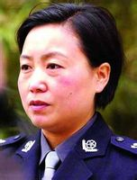 | 1、霞蔚长空警魂不朽——任长霞 | 她是中原大地上的又一个女英雄。扫恶打黑，除暴安良，她铁面无私；嘘寒问暖，扶危济困，她柔肠百转。十里长街，白花胜雪，挽幛如云，那是流动在百姓心中的丰碑！一个弱女子能赢得百姓的爱戴，是因为，在她的心里有对百姓最虔诚的尊重！ |
| 2004 | 22 |  |
2、为百姓甘当孺子牛——牛玉儒 | 名叫牛玉儒，人像孺子牛，背负着草原人的幸福之路，这幸福是他的给养，也是他的方向，风雨人生，利弊得失，他兢兢业业地遵循着“位卑未敢忘忧国”的古训。为官一任，他给我们留下激情燃烧的背影，他让精神穿越时代常青，他让活着的人肃然起敬；他让天空成为雄鹰的故乡！ |
| 2004 | 23 | 3、当代孝子捐肾救母——田世国 | “谁言寸草心，报得三春晖？”这是一个被追问了千年的问题。一个儿子在2004年用身体做出了自己的回答，他把生命的一部分回馈给病危的母亲。在温暖的谎话里，母亲的生命也许依然脆弱，但是孝子的真诚已经坚如磐石。田世国，让天下所有的母亲收获慰藉。 | |
| 2004 | 24 | 4、风驰电掣想到做到——刘翔 | 12秒91，他实现了一次伟大的跨越，100年来的记录成了身后的历史，十重栏杆不再是东方人的障碍，因为中国有刘翔，亚洲有刘翔！这个风一样的年轻人，他不断超越，永不言败，代表着一个正在加速的民族。他身披国旗，一跃站在世界面前。 | |
| 2004 | 25 |  |
5、毕生梦想消除饥饿——袁隆平 | 他是一位真正的耕耘者。当他还是一个乡村教师的时候，已经具有颠覆世界权威的胆识；当他名满天下的时候，却仍然只是专注于田畴，淡泊名利，一介农夫，播撒智慧，收获富足。他毕生的梦想，就是让所有的人远离饥饿。喜看稻菽千重浪，最是风流袁隆平。 |
| 2004 | 26 |  |
6、花甲老人勇救人质——孙必干 | 他于花甲之年临危受命，远离故土只为续写使命传奇。为了达成和平，他游刃于战火之间，为了挽救生命，他斡旋在死亡边缘。“苟利国家生死以，岂因祸福趋避之”。2004年，这个老人不知疲倦地奔走。前方，是他必赴的使命；身后，是让他骄傲的祖国。 |
| 2004 | 27 | 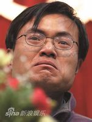 | 7、大山深处孤身支教——徐本禹 | 如果眼泪是一种财富，徐本禹就是一个富有的人，在过去的一年里，他让我们泪流满面。从繁华的城市，他走进大山深处，用一个刚刚毕业的大学生稚嫩的肩膀，扛住了倾颓的教室，扛住了贫穷和孤独，扛起了本来不属于他的责任。也许一个人的力量还不能让孩子眼睛铺满阳光，爱，被期待着。徐本禹点亮了火把，刺痛了我们的眼睛。 |
| 2004 | 28 | 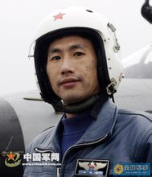 | 8、空中停车奇迹迫降——梁万俊 | 鹰是天空中最娴熟的飞行家，但是他却有比鹰还要优秀的飞行技能。万米高空之上，数险并发之际，他从容镇静，瞬间的选择注定了这次飞行像彩虹一样辉煌。生死8分钟，惊天一落，他创造了奇迹！为你骄傲！中国军人，钢铁是这样炼成的。 |
| 2004 | 29 |  |
9、卧底缉毒刀尖跳舞——明正彬 | 刀尖上的舞蹈，之所以能够慑人心魄，是因为那是铁与血的交响。明正彬就是在刀尖上跳舞的人。在毒贩子面前，他吓不怕、买不动、难不倒。而毒贩子在他手下，过不去、藏不住、逃不掉。因为有他和他的战友，我们才能享受阳光的灿烂。 |
| 2004 | 30 |  |
10、抗艾英雄温情无限——桂希恩 | 他清贫而充实，温和而坚定。仁者的责任让他知难而上。他让温暖传递，他让爱心汇聚，直到更多的人向弱者张开双臂，直到角落里的人们看到春天。他不惧怕死亡，因为他对生命有博大的爱。 |
| 2004 |  |
◎《感动中国》2004年度人物特别奖：绝地反击勇夺金牌——中国女排 | 中国女排，曾经沸腾了一代人的热血，也在中国人的心里留下了长达20年的期待。2004年的一天，于无声处，绝地反击。是她们，让最后的希望攀援着意志的臂膀上升，直到最后一记重扣敲开欢庆的锣鼓。金牌唤回曾经的光荣，胜利开启崭新的梦想！ | |
| 2005 魏青刚 丛飞 黄伯云 李春燕 洪战辉 陈健 邰丽华 杨业功 王顺友 费俊龙、聂海胜 青藏铁路的建设者 | ||||
| 2005 | 31 | 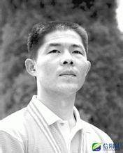 | 1、搏击巨浪勇救人——魏青刚 | 沧海横流，方显英雄本色！为了一个陌生人，他在滔天巨浪中三进三出，危险面前，他根本不需要选择，因为这瞬间动作源自内心品质。从人群中一跃而出，又悄然回到人群中去，他，是侠之大者。 |
| 2005 | 32 | 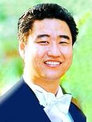 | 2、把时间献给孩子——丛飞 | 从看到失学儿童的第一眼到被死神眷顾之前，他把所有的时间都给了那些需要帮助的孩子，没有丝毫保留，甚至不惜向生命借贷，他曾经用舞台构筑课堂，用歌声点亮希望。今天他的歌喉也许不如往昔嘹亮，却赢得了最饱含敬意的喝彩。 |
| 2005 | 33 |  |
3、15年铸成倚天剑——黄伯云 | 这个和世界上最硬材料打交道的人，有着温润如玉的性格，渊博宽厚，抱定赤子之心；静能寒窗苦守，动能点石成金。他是个值得尊敬的长者，艰难困苦，玉汝以成，三万里回国路，二十年砺剑心，大哉黄伯云！ |
| 2005 | 34 |  |
4、照亮苗乡的月亮——李春燕 | 她是大山里最后的赤脚医生，提着篮子在田垄里行医，一间四壁透风的竹楼，成了天下最温暖的医院，一副瘦弱的肩膀，担负起十里八乡的健康，她不是迁徙的候鸟，她是照亮苗乡的月亮。 |
| 2005 | 35 | 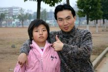 | 5、带着妹妹上大学——洪战辉 | 当他还是一个孩子的时候，就对另一个更弱小的孩子担起了责任，就要撑起困境中的家庭，就要学会友善、勇敢和坚强，生活让他过早地开始收获，他由此从男孩开始变成了苦难打不倒的男子汉，在贫困中求学，在艰辛中自强，今天他看起来依然文弱，但是在精神上，他从来是强者。 |
| 2005 | 36 |  |
6、37年坚守诺言——陈健 | 一个生者对死者的承诺，只是良心的自我约束，但是他却为此坚守37年，放弃了梦想、幸福和骨肉亲情，淡去火红的时代背景，他身上有古典意识的风范，无论在哪个年代，坚守承诺始终是支撑人性的基石，对人如此，对一个民族更是如此。 |
| 2005 | 37 |  |
7、无声世界创造美丽——邰丽华 | 从不幸的谷底到艺术的巅峰，也许你的生命本身就是一次绝美的舞蹈，于无声处，展现生命的蓬勃，在手臂间勾勒人性的高洁，一个朴素女子为我们呈现华丽的奇迹，心灵的震撼不需要语言，你在我们眼中是最美。 |
| 2005 | 38 | 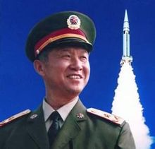 | 8、中国军人的旗帜——杨业功 | 铸就长缨锐旅，锻造导弹雄师。他用尺子丈量自己的工作，用读秒计算自己的生命。未曾请缨提旅，已是鞠躬尽瘁。天下虽安，忘战必危，他是中国军人一面不倒的旗帜！ |
| 2005 | 39 | 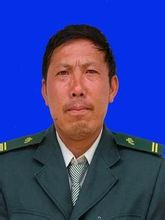 | 9、马班邮路的铁汉——王顺友 | 他朴实的像一块石头，一个人一匹马，一段世界邮政史上的传奇，他过滩涉水，越岭翻山，用一个人的长征传邮万里，用20年的跋涉飞雪传心，路的尽头还有路，山的那边还是山，近邻尚得百里远，世上最亲邮递员。 |
| 2005 | 40 | 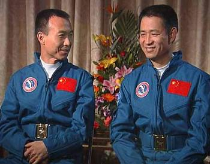 | 10、飞天英雄——费俊龙、聂海胜 | 谁能让全世界1/5的心灵随着他们的节奏跳动五天五夜，谁能从前所未有的高度见证中国实力的飞跃，他们出征苍穹，画出龙的轨迹，升空日行八万里，巡天遥看一千河，他们是中国航天的黄金一代。 |
| 2005 | ◎《感动中国》2005年度人物特别奖： 青藏铁路的建设者 |
每当汽笛声穿过唐古拉山口的时候，高原上的雪山、冻土、冰河，成群的藏羚羊，都会想念他们，想念那些有力的大手和坚强的笑容。他们能驱动钢铁，也会呵护生命。他们，是地球之巅的勇者，他们，缔造了世界上最伟大的铁路！ | ||
| 2006 丁晓兵 王百姓 华益慰 霍英东 季羡林 叶笃正 孔祥瑞 林秀贞 黄舸 青岛爱心群体——微尘 | ||||
| 2006 | 41 | 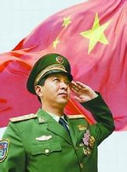 | 1、独臂英雄——丁晓兵 | 这个用左手敬军礼的人，我们以他为骄傲。战时敢舍身，平时能忘我，从逆境中挣扎启程，在顺境中保持清醒。沙场带兵敢称无愧无悔，把守国门能说有骨有节。他像一把号角，让理想与激动，在士兵心中蔓延。 |
| 2006 | 42 |  |
2、排爆专家——王百姓 | 10年时间，1.5万多枚炸弹，专门与危险打交道。谁能不害怕，平常人只要一次遭遇炸弹，就已经惊心动魄了。而他和我们一样，有家有妻有娃，只不过头顶上有警徽、警徽上有国徽，所以他才把家人的担忧、战友的期盼，一肩担起。 |
| 2006 | 43 | 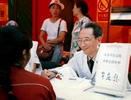 | 3、好医生——华益慰 | 不拿一分钱，不出一个错，这种极限境界，非有神圣信仰不能达到。他是医术高超与人格高尚的完美结合。他用尽心血，不负生命的嘱托。 |
| 2006 | 44 |  |
4、慈善家——霍英东 | 生于忧患，以自强不息成就人生传奇。逝于安乐，用赤诚赢得生前身后名。他有这样的财富观：民族大义高于金钱，赤子之心胜于财富。他有这样的境界：达则兼济天下。 |
| 2006 | 45 |  |
5、著名学者——季羡林 | 智者乐，仁者寿，长者随心所欲。曾经的红衣少年，如今的白发先生，留德十年寒窗苦，牛棚杂忆密辛多。心有良知璞玉，笔下道德文章。一介布衣，言有物，行有格，贫贱不移，宠辱不惊。 |
| 2006 | 46 | 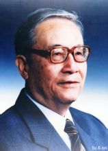 | 6、气象学家——叶笃正 | 风华正茂时已经是奠基人，古稀之年仍然是开拓者。让外国人同我们接轨，这是一个年过九旬的大学者的大气象。笑揽风云动，睥睨大国轻。 |
| 2006 | 47 | 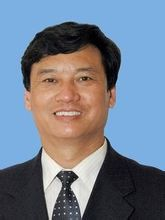 | 7、蓝领专家——孔祥瑞 | 不管什么时代，劳动者都是社会的中流砥柱。但在今天，更值得尊敬的，还应该是那些不仅贡献汗水还贡献智慧的人。150项革新，给国家带来8000万元效益，这就是一个工人的成就。 |
| 2006 | 48 |  |
8、爱心大姐——林秀贞 | 用30载爱心让一村之中老有所终，幼有所长，鳏寡孤独废疾者皆有所养。富人做这等事是慈善，穷人做这等事是圣贤，官员做这等事是本分，农民做这等事是伟人。这位农妇让九州动容。 |
| 2006 | 49 | 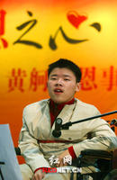 | 9、阳光少年——黄舸 | 我们需要静下心来体会这个场面，一个四肢无力的孩子，每天都在和死神赛跑，跋山涉水、万里迢迢。他就像一小截被命运丢弃的蜡烛，善良的人点亮他，他就欢快地燃烧起来。藏起眼泪，还给人们光明和希望。 |
| 2006 | 50 | 10、青岛爱心群体——微尘 | 他来自人群，像一粒尘土，微薄、微细、微乎其微，寻找不到，又随处可见。他自认渺小，却塑造了伟大，这不是一个人的名字，这是一座城市的良心。 | |
| 2006 | 11、特别致敬： | 走过两万五千里长征的老红军。在那个年代里，在中国的版图上有一条令全世界都瞩目的血路：长征。没有颁奖辞，但仅留的几位老人给我们留下的感动不比其他任何一个人差。红军不怕远征难！ | ||
| 2007 钱学森 闵恩泽 方永刚 谢延信 钟期荣、胡鸿烈 罗映珍 李剑英 李丽 陈晓兰 孟祥斌 嫦娥一号 | ||||
| 2007 | 51 | 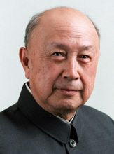 | 1、钱学森——民族脊梁 | 在他心里，国为重，家为轻，科学最重，名利最轻。五年归国路，十年两弹成。他是知识的宝藏，是科学的旗帜，是中华民族知识分子的典范。 |
| 2007 | 52 |  |
2、闵恩泽——人生如炬 | 在国家需要的时候，他站出来！燃烧自己，照亮能源产业。把创新当成快乐，让混沌变得清澈，他为中国制造了催化剂。点石成金，引领变化，永不失活，他就是中国科学的催化剂！ |
| 2007 | 53 | 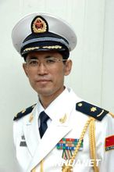 | 3、方永刚——践行信仰 | 他是一位满怀激情的理论家，更是敢于奉献生命的实践者。在信仰的战场上，他把生命保持在冲锋的状态。 |
| 2007 | 54 |  |
4、谢延信——有信延信 | 当命运的暴风雨袭来时，他横竖不说一句话，生活的重担压在肩膀上，他的头却从没有低下！用33年辛劳，延展爱心，信守承诺。他就像是一匹老马，没有驰骋千里，却一步一步地到达了善良的峰顶。 |
| 2007 | 55 |  |
5、钟期荣、胡鸿烈——树仁立德 | 狮子山下的愚公，香江边上的夫子。贤者伉俪，本可锦衣玉食，却偏偏散尽家产，一生奔波。为了学生，甘为骆驼。与人有益，牛马也做。我们相信教育能改变社会，而他们为教育做出楷模。 |
| 2007 | 56 |  |
6、罗映珍——真爱无疆 | 她用一个传统中国女人最朴素的方法诠释了对爱人不离不弃的忠贞。甜蜜不是爱情的标尺，艰难才能映照爱情的珍贵。 |
| 2007 | 57 |  |
7、李剑英——天地英雄 | 星陨大地，魂归长天，他有22年飞行生涯，可命运只给他16秒！他是一名军人，自然把生命的天平向人民倾斜。飞机无法转弯，他只能让自己的生命改变航向。 |
| 2007 | 58 |  |
8、李丽——心灵强者 | 残疾打不垮、贫困磨不坏、灾难撞不倒，坚强和她的生命一起成长。身体被命运抛弃，心灵却唱出强者的歌。她用轮椅为爱心画出最美的轨迹。 |
| 2007 | 59 |  |
9、陈晓兰——大医医心 | 虽千万人，吾往矣！曾经艰难险阻，她十年不辍，既然身穿白衣，就要对生命负责，在这个神圣的岗位上，良心远比技巧重要的多。她是一位医生，治疗疾病，也让这个行业更纯洁。 |
| 2007 | 60 |  |
10、孟祥斌——义无反顾 | 风萧萧，江水寒，壮士一去不复返。同样是生命，同样有亲人，他用一次辉煌的陨落，挽回另外一个生命。别去问值还是不值，生命的价值从来不是用交换体现。他在冰冷的江水中睡去，给我们一个温暖的启示。 |
| 2007 | ◎《感动中国》2007年度人物特别奖： 嫦娥一号研发团队 |
这是一支年轻的队伍，平均年龄仅30岁。副总指挥34岁，副总设计师37岁，总体主任设计师36岁。这是一群航天才俊，为达到“精确变轨，绕月飞行，首飞成功，一年寿命”的探测工程目标，他们针对月球探测卫星的新特点，集思广益开拓进取，短短三年多来先后攻克了轨道设计、月食问题、数传定向天线研制、卫星热设计、导航与控制分系统设计、测控数传分系统设计、紫外月球敏感器、数管分系统设计等一系列技术难题，拿下了一大批具有自主知识产权的核心技术。这是一只高度团结的队伍，统一决心、统一意志、统一目标和统一行动。这是一支不负众望的团队，11月7日，北京航天飞行控制中心，当嫦娥一号卫星以超出设计预期的精准度进入环月工作轨道的那一刻，举国欢庆、全民振奋。中国人千年奔月的愿望终于梦想成真。 | ||
| 2008 唐山十三农民兄弟 李隆 经大忠 武文斌 金晶 吉吉 张艺谋奥运团队 神七航天员 韩惠民 李桂林、陆建芬 全体“中国人” | ||||
| 2008 | 61 | 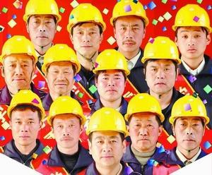 | 1、唐山十三农民兄弟（宋志永、杨国明、杨东、王加祥、王得良、宋志先、王宝国、王宝中、曹秀军、尹福、宋久富、杨国平、王金龙）——大爱至善 | 不是归途，是千里奔波，雪中送炭；不是邻里，是素不相识，出手相援。他们用纯朴、善良和倔强的行动，告诉了我们“兄弟”的含义。 |
| 2008 | 62 |  |
2、救灾火线上的尖兵、创造一个又一个生命救援奇迹的 李隆——男儿榜样 |
火场、废墟，有多少次出生入死，就有多少次不离不弃。他用希望扩展希望，用生命激活生命。 |
| 2008 | 63 | 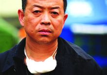 | 3 、从容指挥救灾、3天3夜没有合眼的北川县长 经大忠——中流砥柱 |
千钧一发时，他振聋发聩，当机立断；四面危机时，他忍住悲伤，力挽狂澜！他和同志们双肩担起一城信心，万千生命。心系百姓、忠于职守，凸显共产党人的本色。 |
| 2008 | 64 | 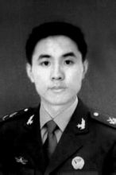 | 4 、为救灾活活累死的小战士 武文斌——死的光荣 |
山崩地裂之时，绿色的迷彩撑起了生命的希望，他树起了旗帜，自己却悄然倒下，在那灾难的黑色背景下，他26岁的青春，是最亮的那束光。 |
| 2008 | 65 |  |
5 、勇敢用残缺的身体保护奥运火炬的火炬手 金晶——大写尊严 |
那是光荣的一刻！她以柔弱之躯挡住残暴，她用美丽的微笑，传递力量。她让全世界读懂了奥运的神圣和中国人的骄傲。 |
| 2008 | 66 |  |
6 、把圣火送上最高的地方、书写奥运史上奇迹的火炬手 吉吉——点燃生命 |
白的雪，红的火，刺骨的风，激荡的心。鹰失去了同伴，但山的呼唤让她飞得更高，她，是高山上绽放的雪莲。 |
| 2008 | 67 | 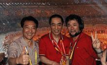 | 7 、让中国惊艳世界的 张艺谋奥运团队——华彩惊世 |
长卷舒展，活字跳跃；圣火激荡，情感喷放。他们用人类共通的语言，那一夜，中国惊艳世界。 |
| 2008 | 68 |  |
8、为中国人圆“太空行走之梦”的 神七航天员——傲拓天疆 |
中国人的足迹，从此印进寥廓而深邃的星空，当他们问候世界的时候，给未来留下了深远的回声。 |
| 2008 | 69 |  |
9、携妻照顾初恋女友34年的 韩惠民——这就是爱 |
他用百姓最朴素的方式，回答了生活中最为深奥的问题：有比爱情更坚固的情感，有比婚姻更宏伟的殿堂，34年的光阴，青丝转成白发，不变的是真情。 |
| 2008 | 70 |  |
10 、悬崖小学的支教夫妻 李桂林、陆建芬——烛照深山 |
在最崎岖的山路上点燃知识的火把，在最寂寞的悬崖边拉起孩子们求学的小手，19年的清贫、坚守和操劳，沉淀为精神的沃土，让希望发芽。 |
| 2008 | ◎《感动中国》2008年度人物特别奖： 全体“中国人” |
组委会认为，2008年的中国经历了太多悲怆和喜悦，在抗击暴风雪、抗震救灾、举办奥运会、“神七”航天员太空漫步等事件中，中国人用坚韧、勇敢、智慧向世界展示了令人震撼的民族力量。 | ||
| 2009 卓琳 宋文骢 阿里帕·阿力马洪 萨布利亚·坦贝肯 张正祥 陈玉蓉 朱邦月 沈浩 李灵 翟墨 长江大学大学生群体 | ||||
| 2009 | 71 |  |
1、邓小平同志的夫人 卓琳——平凡至伟 |
彩云之南的才女，黄土高原上的琼英。携小平手五十八载，硝烟里转战南北，风雨中起落同随。对她爱的人不离不弃，让爱情变成了信念。她的爱向一个民族的崛起，注入了女性的坚定、温暖与搀扶。 |
| 2009 | 72 | 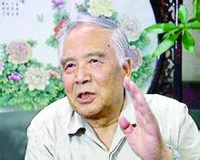 | 2、“歼10”战斗机总设计师 宋文骢————壮志凌云 |
少年伤痛，心怀救国壮志；中年发奋，澎湃强国雄心。如今，他的血液已流进钢铁雄鹰。青骥奋蹄向云端，老马信步小众山。他怀着千里梦想，他仍在路上。 |
| 2009 | 73 | 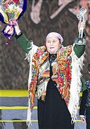 | 3、多民族孤儿的妈妈 阿里帕·阿力马洪——母爱最真 |
不是骨肉，但都是她的孩子，她展开羽翼，撑起他们的天空。风霜饥寒，全都挡住，清贫劳累，一肩担当。在她的家里，水浓过了血，善良超越了亲情。泉水最清，母爱最真。 |
| 2009 | 74 |  |
4、给高原的盲童带来光明的使者 萨布利亚·坦贝肯（德国）——光明心生 |
她看不到世界，偏要给盲人开创一个新的天地。她从地球的另一边来，为一群不相识的孩子而来，不企盼神迹，全凭心血付出，她带来了光。她的双眼如此明亮，健全的人也能从中找到方向。 |
| 2009 | 75 | 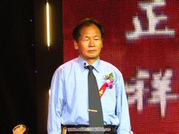 | 5、26年义务守护滇池环境的农民 张正祥——勇者无敌 |
生命只有一次，滇池只有一个，他把生命和滇池紧紧地绑在了一起。他是一个战士，他的勇气让所有人胆寒，他是孤独的，是执拗的，是雪峰之巅的傲然寒松。因为有这样的人，人类的风骨得以传承挺立。 |
| 2009 | 76 |  |
6、割肝救子的暴走妈妈 陈玉蓉——母爱齐天 |
这是一场命运的马拉松。她忍住饥饿和疲倦，不敢停住脚步。上苍用疾病考验人类的亲情，她就舍出血肉，付出艰辛，守住信心。她是母亲，她一定要赢，她的脚步为人们丈量出一份伟大的亲情。 |
| 2009 | 77 |  |
7、照顾残疾家人20多年的退休工人 朱邦月—— 一家之主 |
这个奇特的家庭，集中了世界上最多的苦难，也凝聚了人间最真的情感。头发花白，面带微笑，这个温和而坚定的老人，胸中盛满四十年的艰难。他这支拐杖，是一家人的翅膀。他这双肩膀，扛住了生命的重量。 |
| 2009 | 78 | 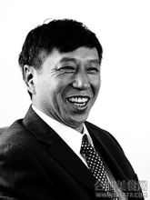 | 8、小岗村群众的贴心人 沈浩——践行信念 |
两任村官，六载离家，总是和农民面对面，肩并肩。他走得匆忙，放不下村里道路工厂和农田，对不住家中娇妻幼女高堂。那一年，村民按下红手印，改变乡村的命运；如今，他们再次伸出手指，鲜红手印，颗颗都是他的碑文。 |
| 2009 | 79 |  |
9、为留守儿童办学的女大学生 李灵——心灵放歌 |
一切从零开始，从乡村开始，从识字和算术开始。别人离开的时候，她留下来；别人收获的时候，她还在耕作。她挑着孩子沉甸甸的梦想，她在春天播下希望的种子。她是八零后。 |
| 2009 | 80 |  |
10、中国环球航海第一人 翟墨——云帆沧海 |
古老船队的风帆落下太久，人们已经忘记了大海的模样。六百年后，他眺望先辈的方向，直挂云帆，向西方出发，从东方归航。他不想征服，他只是要达成梦想——到海上去！一个人，一张帆，他比我们走得都远！ |
| 2009 | ◎《感动中国》2009年度人物特别奖：何东旭、陈及时、方招等勇救落水儿童的长江大学大学生群体。 | 他们纵身一跃，划出了人生最壮丽的弧线，他们奋力一举，绽放出生命最高尚的光芒。他们用青春传承了见义勇为，用无畏谱写了一曲英雄的赞歌。 | ||
| 2010 钱伟长 孙水林、孙东林 才哇 郭明义 王伟 王万青 王茂华、谭良才 何祥美 刘丽 孙炎明 海地中国维和人员 K165次列车乘务组英雄列车 中国志愿者 | ||||
| 2010 | 81 | 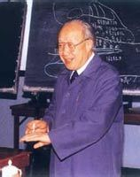 | 1、钱伟长 | 从义理到物理，从固体到流体，顺逆交替，委屈不曲，荣辱数变，老而弥坚，这就是他人生的完美力学，无名无利无悔，有情有义有祖国。 |
| 2010 | 82 | 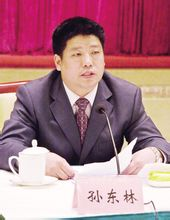 | 2、孙水林、孙东林——信义兄弟 | 言忠信，行笃敬，古老相传的信条，演绎出现代传奇，他们为尊严承诺，为良心奔波，大地上一场悲情接力。雪夜里的好兄弟，只剩下孤独一个。雪落无声，但情义打在地上铿锵有力。 |
| 2010 | 83 |  |
3、才哇——康巴铁汉 | 对乡亲有最深的爱，所以才不眠不休，对生命有更深的理解，所以才不离不弃，铁打的汉子，是废墟上不倒的柱，不断的梁。他沉静的面孔，是高原上最悲壮的风景。 |
| 2010 | 84 |  |
4、郭明义——雷锋传人 | 他总看别人，还需要什么；他总问自己，还能多做些什么。他舍出的每一枚硬币，每一滴血都滚烫火热。他越平凡，越发不凡，越简单，越彰显简单的伟大。 |
| 2010 | 85 | 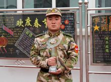 | 5、王伟——舟曲之子 | 大雨滂沱，冲毁了房屋淹没了哭喊。妻儿需要你的肩膀，而人民更需要你的脊梁。五百米的距离，这个战士没有回家，那个最漆黑的夜晚，他留给自己一个永远不能接起的电话，留给我们一种力量。 |
| 2010 | 86 |  |
6、王万青——草原曼巴 | 只身打马赴草原，他一路向西，千里万里，不再回头，风雪行医路，情系汉藏缘。四十载似水流年，磨不去他对理想的忠诚。春风今又绿草原，门巴的故事还会有更年轻的版本。 |
| 2010 | 87 |  |
7、王茂华、谭良才——英雄翁婿 | 烈火是一场生死攸关的测试，生命是一道良知大爱的考验，你们用果敢应战，用牺牲作答！一对侠义翁婿，火海中三进三出，为人们讲述了什么是舍生忘死，人间挚爱。 |
| 2010 | 88 |  |
8、何祥美——三栖尖兵 | 百折不挠，百炼成钢，能上九天，能下五洋，执著手中枪，百步穿杨，胸怀报国志，发愤图强。百战百胜，他是兵中之王！ |
| 2010 | 89 | 9、刘丽——最美洗脚妹 | 为什么是她，一个瘦弱的姑娘，一副疲惫的肩膀。是内心的善良，让她身上有圣洁的光芒。她剪去长发，在风雨里长成南国高大的木棉，红硕的花朵，不是叹息，是不灭的火炬。 | |
| 2010 | 90 | 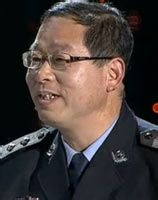 | 10、孙炎明——警界保尔 | 重犯监室年年平安，而自己的生命还要经历更多风险。他抖擞精神，让阳光驱散铁窗里的冰冷，他用微笑诠释着什么是工作，用坚强提示着什么是生活。人生都有同样的终点，他比我们有更多坦然。 |
| 2010 | 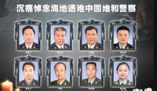 | ◎《感动中国》2010年度人物特别奖： 1、海地中国维和人员 |
中国人为和平付出了生命的代价，那一刻，感动的不仅是中国，还有世界。 | |
| 2010 |  |
◎《感动中国》2010年度人物特别奖： 2、K165次列车乘务组英雄列车 |
临危不惧让我们看到了工作态度，而临危不乱让我们看到了职业水准，正是这个团队，成了奇迹创造者。 | |
| 2010 |  |
◎《感动中国》2010年度人物特别奖： 3、中国志愿者 |
也许我们已经习惯了志愿者就在我们的身边，我们更要习惯，您也是志愿者当中的一个。在2010年不同的背景上，我们在玉树、在舟曲、在世博、在亚运，在那些鲜为人知的地方，都可以看到志愿精神在闪耀。我们把它转变成一颗又一颗志愿的心。属于志愿者的奖杯应该颁给太多太多的人，它属于你，属于我，属于他。让这个奖杯在人群中传递，在您的手中传递，就像一个邀请，你，也是志愿者当中的一员。让它，带着我们的温度，一个接一个地向下传递。 | |
| 2011 朱光亚 胡忠、谢晓君 吴孟超 刘伟 杨善洲 阿里木 张平宜 孟佩杰 吴菊萍 刘金国 白方礼 | ||||
| 2011 | 91 | 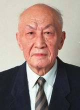 | 1、朱光亚——中华之光—— 一生就做了一件事 | 人生为一大事来。他一生就做了一件事，但却是新中国血脉中，激烈奔涌的最雄壮力量。细推物理即是乐，不用浮名绊此生。遥远苍穹，他是最亮的星。 |
| 2011 | 92 | 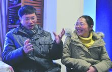 | 2、胡忠、谢晓君——高义薄云——坚守藏区12年支教 | 他们带上年幼的孩子，是为了更多的孩子。他们放下苍老的父母，是为了成为最好的父母。不是绝情，是极致的深情；不是冲动，是不悔的抉择。他们是高原上怒放的并蒂雪莲。 |
| 2011 | 93 | 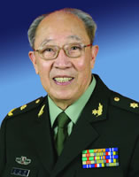 | 3、吴孟超——肝胆春秋—— 设身处地为病人着想 | 六十年前，他搭建了第一张手术台，到今天也没有离开。手中一把刀，游刃肝胆，依然精准；心中一团火，守着誓言，从未熄灭。他是不知疲倦的老马，要把病人一个一个驮过河。 |
| 2011 | 94 |  |
4、刘伟——隐形翅膀——无臂钢琴师刘伟 | 当命运的绳索无情地缚住双臂，当别人的目光叹息生命的悲哀，他依然固执地为梦想插上翅膀，用双脚在琴键上写下：相信自己。那变幻的旋律，正是他努力飞翔的轨迹。 |
| 2011 | 95 |  |
5、杨善洲——公仆本色——好书记杨善洲退休后义务植树22年 | 绿了荒山，白了头发，他志在造福百姓；老骥伏枥，意气风发，他心向未来。清廉，自上任时起；奉献，直到最后一天。60年里的一切作为，就是为了不辜负人民的期望。 |
| 2011 | 96 |  |
6、阿里木——义侠巴郎——烤羊肉串的阿里木8年资助上百名贫困生 | 快乐的巴郎，在烟火缭绕的街市上，大声放歌。苦难没有冷了他的热心，声誉不能改变他的信念。一个人最朴素的恻隐，在人群中激荡起向善的涟漪。 |
| 2011 | 97 | 7、张平宜——希望之翼——张平宜让麻风村孩子受教育 | 蜀道难，蜀道难，台湾娘子上凉山。跨越海峡，跨越偏见，她抱起麻风村孤单的孩子，把无助的眼神柔化成对世界的希望。她看起来无比坚强，其实她的内心比谁都柔软。 | |
| 2011 | 98 | 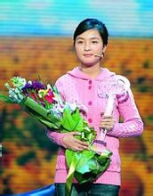 | 8、孟佩杰——孝女当家——恪守孝道的平凡女孩 | 在贫困中，她任劳任怨，乐观开朗，用青春的朝气驱赶种种不幸；在艰难里，她无怨无悔，坚守清贫，让传统的孝道充满每个细节。虽然艰辛填满四千多个日子，可她的笑容依然灿烂如花。 |
| 2011 | 99 |  |
9、吴菊萍——最美妈妈——托举生命的最美妈妈 | 危险裹胁生命呼啸而来，母性的天平容不得刹那摇摆。她挺身而出，接住生命，托住了幼吾幼及人之幼的传统美德。她并不比我们高大，但那一刻，已经让我们仰望。 |
| 2011 | 100 | 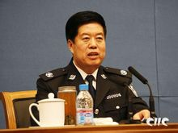 | 10、刘金国——烈火金刚——烈火锻造的铁血将帅 | 贼有未曾经我缚，事无不可对人言。是盾，就矗立在危险前沿，寸步不退。是剑，就向邪恶扬眉出鞘，绝不姑息。烈火锻造的铁血将帅，两袖清风的忠诚卫士。 |
| 2011 |  |
◎《感动中国》2011人物特别奖： 白方礼 |
向以白方礼老人为代表的长年热心公益事业而未能获得感动中国荣誉的所有爱心人士表示特别致敬。白方礼：生于1913年5月13日，故于2005年9月23日，享年93岁。祖籍河北省沧州市沧县白贾村，从1987年开始，白芳礼连续十多年靠自己蹬三轮的收入帮助贫困的孩子实现上学的梦想，直到他将近90岁。 | |
| 2012 | ||||
| 2012 | 101 |  |
林俊德纵死终令汗竹香 |
大漠，烽烟，马兰。平沙莽莽黄入天，英雄埋名五十年。剑河风急云片阔，将军金甲夜不脱。战士自有战士的告别，你永远不会倒下！
推选委员胡占凡：把能够拥有的时光都献给了岗位，最后还在向目标冲锋。这是一位真正用信念撑起生命尊严的军人。 推选委员张瑞敏：以智殉国，铸就成中华民族的铜墙铁壁；致死攻坚，绽放成死亡之海的倔强马兰。 |
| 2012 | 102 |  |
陈斌强孝更绝伦足可矜 |
小时候，这根布带就是母爱，妈妈用它背着你。长大了，这布带是儿子的深情，你用它背着妈妈。有一天，妈妈的记忆走远了，但爱不会，它在儿女的臂膀上一代代传承。
推选委员杜玉波：陈斌强自身的朴实行为给他的学生，也给整个社会上了极为生动的一课。他是一个真正有师德的好老师。 推选委员吴孟超说：陈斌强付出的孝心，不仅抚慰母亲，也抚慰每一位中国人的心，这种中华民族朴素而真挚的人性之美，可以作为社会的良药。 |
| 2012 | 103 |  |
何玥何处春江无月明 |
正是花样年华，你却悄然离开。你捐出自己，如同花朵从枝头散落，留得满地清香。命运如此残酷，你却像天使一样飞翔。你来过，你不曾离开，你用平凡生命最后的闪光，把人间照亮。
时文朝：12岁的小女孩坦然面对生死已属难能，在病痛中还不忘善济他人。这一场生命最后的告别，不知敲动了多少人的心灵，平凡善举，可以开启一个有爱的未来。 阿来：今天，当我们怀着悲伤提起这个名字时，却又怀着欣喜，为她的生命与另外的生命合二为一，仍在这个世界上熠熠生辉。 |
| 2012 | 104 |  |
陈家顺动人以行不以言 |
为乡亲卧底，你吃遍所有的苦，为百姓打工，你换来群众最多的甜。你乔装改扮，却藏不住心底最深的惦念；你隐姓埋名，可我们都知道你是谁，为了谁。
于丹：在办公室当局长是本分，吃苦受累冒险卧底当局长是情份。用情份去担当本分的官，才是真正的人民公仆。 彭长城：主动为民生奔波，体恤民生艰难，小可帮扶一家一户，大则微而不弱，烛照未来。 |
| 2012 | 105 |  |
高淑珍爝火燃回春浩浩 |
粗糙的手支起课桌，宽厚的背挡住风雨。有了爱，小院里的孩子一天天茁壮起来。你的心和泥土一样质朴，你洒下辛苦的种子，善良会生长成参天大树。
陈彤：14年的奉献让爱变成了接力赛。志愿者让爱心小院更幸福。这一切都缘于这个普通的农村妇女。 王振耀：十几年如一日为一群不幸的孩子挡风遮雨，幼吾幼以及人之幼的心怀使她成为最伟大的母亲。 |
| 2012 | 106 | 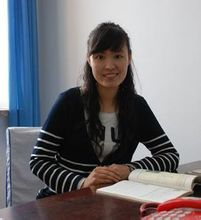 | 张丽莉冰雪为容玉作胎 |
别哭，孩子，那是你们人生最美的一课。你们的老师，她失去了双腿，却给自己插上了翅膀；她大你们不多，却让我们学会了许多。都说人生没有彩排，可即便再面对那一刻，这也是她不变的选择。
陈雨露：她播撒下的大爱种子，必将被无数的奔跑接力，从黑土地传向四面八方。只有教师心中有爱，孩子的世界才会绽放光芒！ 孙伟：危急时刻，她凭直觉挺身而出。那直觉的背后是最具魅力的纯正师德。 |
| 2012 | 107 |  |
李文波能受天磨为铁汉 |
二十年坚守，你站成了一块礁石，任凭风吹浪打。你也有爱，却只能愧对青丝白发。你也有梦，可更知肩上的责任比天大。你的心中自有一片海，在那里，祖国的风帆从不曾落下。
童年：位卑未敢忘忧国，大浪孤胆守海疆。 刘姝威：李文波用自己的行动告诉当代大学生应该如何选择人生。 |
| 2012 | 108 |  |
高秉涵悲莫悲兮生别离 |
海峡浅浅，明月弯弯。一封家书，一张船票，一生的想念。相隔倍觉离乱苦，近乡更知故土甜。少小离家，如今你回来了，双手颤抖，你捧着的不是老兵的遗骨，一坛又一坛，都是满满的乡愁。
阎肃：这海峡好浅好浅，深不过我的遗憾。抱回的岂止百十个骨灰罐，抱回来的人心啊，成千上万上万。坚信着亲情骨血相连，谁也隔不断隔不断。 张会军：75岁的老兵老人，用微薄的力量牵动所有游子的梦回家乡的愿望。我们敬佩他的无私和亲情。 |
| 2012 | 109 |  |
周月华、艾起
清香传得天心在 |
她背起药箱，他再背起她。他心里装的全是她，而她的心里还装着整个村庄。一条路，两个人，二十年。大山巍峨，溪水蜿蜒，月华皎洁，爱正漫漫地升起。
李小林：无论是纯粹的爱情，还是无私的奉献，他们都让我们泪盈于睫。 陆小华：看了周月华的行医路，谁还好意思再说行路难。古人说，医者仁心。她这医生小而仁心大。丈夫背上的女村医，一对普通中国夫妇， 合拼成了大写的人。 |
| 2012 | 110 |  |
罗 阳长使英雄泪满襟 |
如果你没有离开，依然会，带吴钩，巡万里关山。多希望你只是小憩，醉一下再挑灯看剑，梦一回再吹角连营。你听到了么？那战机的呼啸，没有悲伤，是为你而奏响！
黄宏：罗阳用生命诠释了国防科技工作者的报国情怀，你倒下了，梦在起飞。 陈小川：战机起飞和英雄的陨落，让我们的心灵受到同等的震撼。罗阳是中国知识分子报国情怀的高度凝聚，是两弹一星元勋们的精神后人。中国需要更多的罗阳。 |
| 湄公河“10·5惨案”专案组 | 抓获糯康（特别致敬奖） | |||
| 2012 | ||||
| 2013 | 111 | 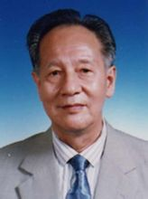 | 黄旭华 默默奉献30年的中国核潜艇之父 |
时代到处是惊涛骇浪，你埋下头，甘心做沉默的砥柱；一穷二白的年代，你挺起胸，成为国家最大的财富。你的人生，正如深海中的潜艇，无声，但有无穷的力量。 为国家做出了巨大贡献，却把名利看得淡如水，是中国知识分子最优秀的一群，他们就是鲁迅先生所讲的——“中国的脊梁”。 |
| 2013 | 112 | 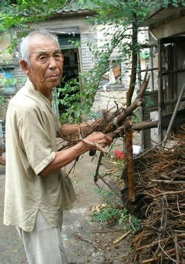 | 刘盛兰 年届90仍然坚持拾荒助学的山东老人 |
残年风烛，发出微弱的光，苍老的手，在人间写下大爱。病弱的身躯，高贵的心灵，他在九旬的高龄俯视生命。一叠叠汇款，是寄给我们的问卷，所有人都应该思考答案。 |
| 2013 | 113 | 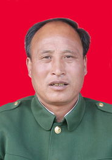 | 陈俊贵 为报答战友深情，几十年守护天山筑路士兵墓园的老兵 |
只为风雪之夜一次生死相托，你守住誓言，为我们守住心灵的最后阵地。洒一碗酒，那碗里是岁月峥嵘；敬一个礼，那是士兵最真的情义。雪下了又融，草黄了又青，你种在山顶的松，岿然不动。 |
| 2013 | 114 | 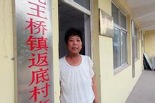 | 段爱平 努力改变乡村面貌的基层好村官 |
山梁挡住了阳光，你用肩膀扛起乡亲的盼望，没有惊天动地，总是一点一滴。村庄在渐渐丰满，你的身体却慢慢柔弱。庄稼，总要把一切还给泥土。你贴工，贴钱，贴命，你还贴近百姓的心。 |
| 2013 | 115 | 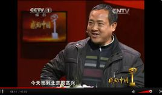 | 沈克泉&沈昌健 35年前仆后继、追逐梦想的 “油菜花父子” |
父亲留恋那油菜花开的芬芳，儿子就把他 葬在不远的山上。三十年花开花谢，两代人春来秋往，一家人不分昼夜，守护最微弱的希 望。一粒种子，蕴含着世代相传的梦想. |
| 2013 | 116 | 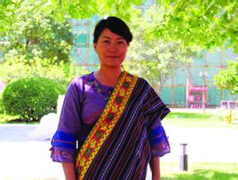 | 格桑德吉 最美教师，西藏墨脱山区教师 |
不想让乡亲的梦，跌落于山崖。门巴的女儿执意要回到家乡，坚守在雪山、河流之间。她用一颗心，脉动一群人的心，用一点光，点亮山间更多的灯火。 |
| 2013 | 117 | 胡佩兰 退休后20年坚持每天出诊的河南仁医 |
技不在高，而在德；术不在巧，而在仁。 医者，看的是病，救的是心，开的是药，给的是情。扈江离与辟芷兮，纫秋兰以为佩。你是仁医，是济世良药。 | |
| 2013 | 118 | 姚厚芝 身患重病，耗时3年绣出《清明上河图》为子女筹学费的慈母 |
病压垮了身体，但不能摧毁母爱。草根母亲呕心沥血，为孩子缝补梦想，而深厚的爱， 更铺就孩子精神的未来。请上天给你多一些时间，让你把美好的愿望，织进这春天的图景。 | |
| 2013 | 119 | 方俊明 荣誉迟到28年而一生不悔的湖北见义勇为好市民 |
纵身一跃，却被命运撞得头破血流。在轮椅上度过青春，但你却固执地相信善良，丝毫不悔。今天你不能起身，但我们知道，你早已 站立在所有人的面前 | |
| 2013 | 120 | 龚全珍 守护开国将军梦想，为群众服务的道德楷模 |
少年时寻见光，青年时遇见爱，暮年到来的时候，你的心依然辽阔。一生追随革命、爱情和信仰，辗转于战场、田野、课堂。跨越人民的敬意，是你一生最美的勋章。 | |
| 2013 | 载人航天英雄 特别奖（特别致敬） |
|||